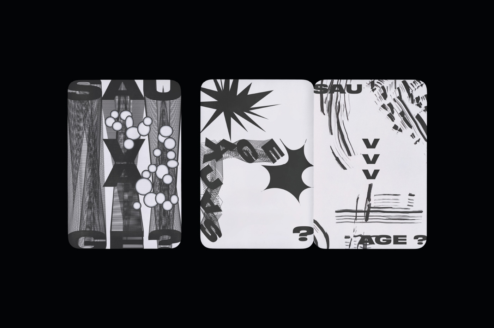
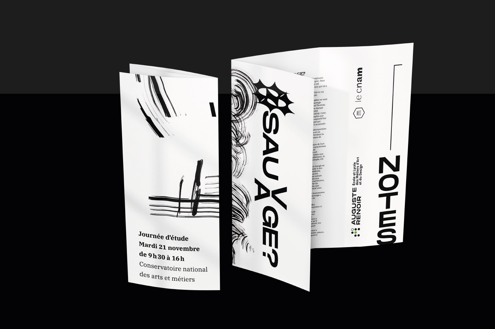
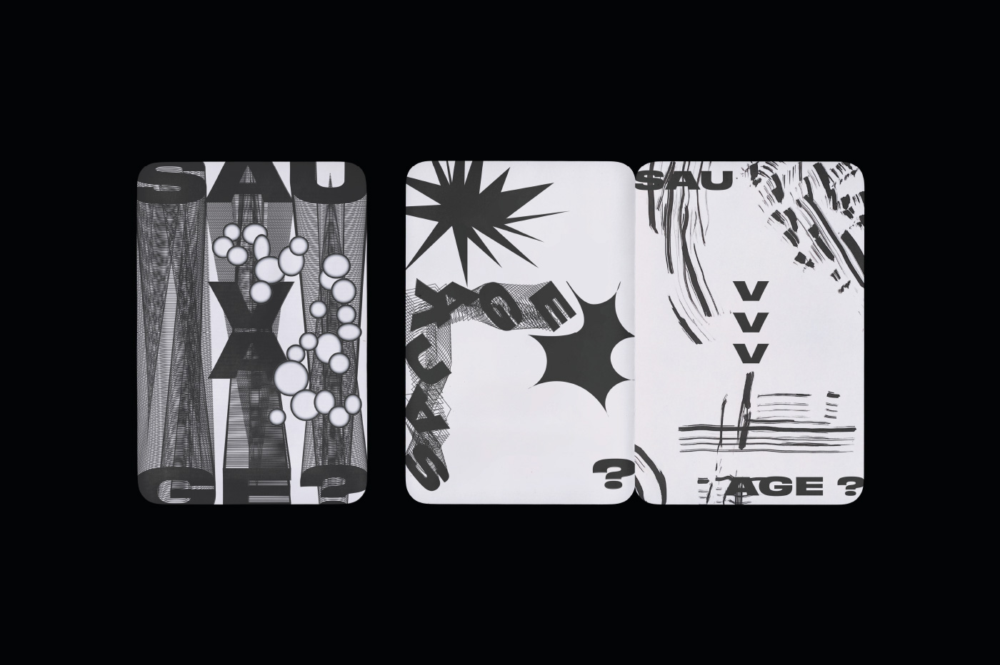
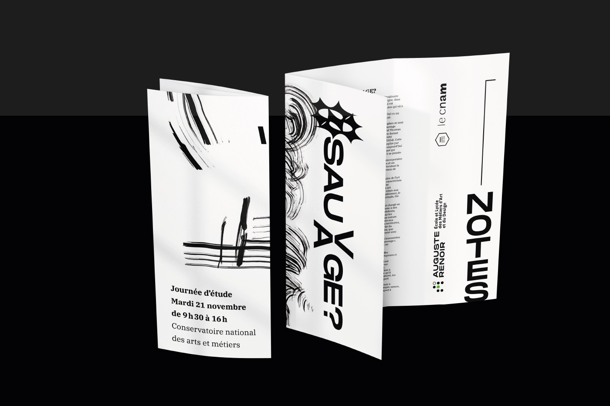

À l’occasion de la journée d’étude 2023 au CNAM, en partenariat avec l’ELMAD Auguste Renoir, un programme et une série d’affiches ont été commandés. L’objectif était d’illustrer le thème de cette année, « Le Sauvage ».
Cette série de supports reflète la liberté et l’énergie du sauvage. Pour l’affiche, afin de maximiser l’expression artistique, j’ai opté pour un travail exclusivement plastique et manuel. La palette de couleurs imposée a été intégrée de manière à maintenir une harmonie visuelle tout en laissant place à une interprétation libre avec le thème de l’événement.
 


